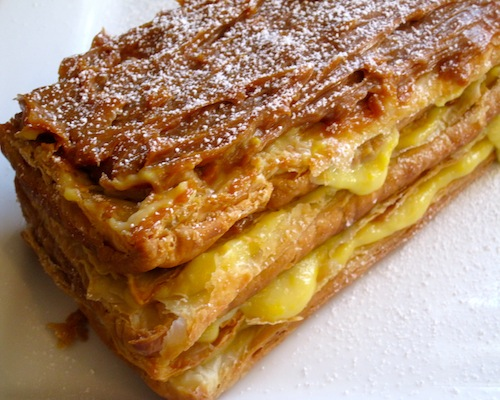

Dolci e dessert

L’Italia è famosa nel mondo per i numerosi dolci e dessert tipici della tradizione. Basta citare il tiramisù, golosità in grado di soddisfare il palato di tutti, il panettone o il pandoro, tipici nel periodo natalizio, o i tradizionali dolci del sud come la pastiera napoletana o la cassata siciliale. Impossibile dimenticare il carnevale, periodo perfetto per preparare ogni tipologia di dolce fritto come frappe o chiacchiere né i dolci al cucchiaio come il biancomangiare o il budino al cioccolato. E se i biscotti meritano un capitolo a parte, la bella stagione è subito sinonimo di gelati artigianali al pistacchio, alla crema o ai gusti più insoliti.
gestione tramite perl di questa pagina. avevo pensato qui di inserire l'elenco dei dessert. le ricette vengono inserite
dalla pagina "proponi ricette" e poi vengono visualizzate qui.(per evitare che la pagina venga troppo lunga si può gestire in questo modo:
viene visualizzato solo dei riquadri come quelli che vedi nella home...relativi ciascuno alla ricetta che hai inserito e poi cliccandoci sopra
verrai reindirizzato alla pagina vera e propria della ricetta).